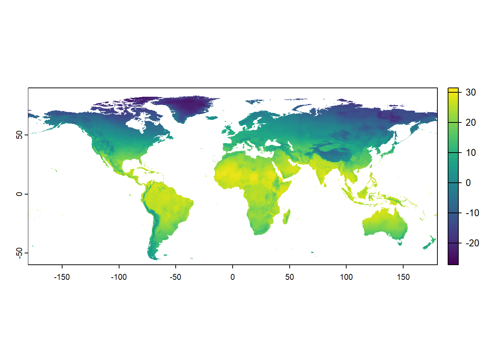

install.packages("terra")
library(terra)
Povzetek
Na teh vajah boste:
- spoznali osnove rastrskih podatkov,
- spoznali bazo podatkov
sdmpredictors, - dostopali in prenesli globalne rasterske podatke in
- jih prikazali in smiselno obarvali z uporabo enostavnih R orodij.
Rastrski podatki (v R-u)
Rastrski podatki so prikazani v obliki mrež, ki jih sestavljajo enake osnovne celice. Obstajajo tri različne oblike, v katerih so lahko rastrski podatki zasnovani, od katerih je kvadratna mreža najpogostejša.

Resolucija oziroma ločljivost je lastnost rastrov, ki nam pove kakšna je velikost posamezne celice. Pri nižjih resolucijah so celice večje in natančnost podatkov manjša. Pri višjih resolucijah so celice manjše in natančnost vecja. Odločitev, katero resolucijo uporabimo je odvisna od obsega naše raziskave (globalna, regionalna, lokalna), obravnavane vrste ali pojava, ki ga proučujemo (npr. čezoceanske migracije ali endemične, ozko razširjene vrste) in dostopnosti podatkov. Najpogostejše resolucije prostorskih podatkov, ki so danes na voljo, segajo od 10 arc minut (npr. worldclim) do 30x30 metrov (npr. landsat).

Prostorska orodja v R-u le redko uporabljajo podatke v tabelarni obliki. Za ta namen obstaja nekaj paketov (razširitev osnovnega R-a), v katerih se nahajajo ustrezne funkcije za pretvorbo in uporabo prostorskih podatkovnih struktur. Za rastrske podatke sta najpogosteje uporabljena:
rasterinterra.
Paket raster je eden izmed najstarejših prostorskih orodij v R-u, ki je definiral različne oblike podatkovnih struktur v R-u: RasterLayer, Raster Stack in Raster Brick ter omogoča uvoz, urejanje in analizo rasterskih podatkov. Paket raster se počasi umika iz uporabe (ustvarjalci gredo v penzijo) in ga nadomeščaa paket terra.
Paket terra je posodobljena, poenostavljena in predvsem hitrejša verzija paketa raster in sp. terra omogoča enostavnejši uvoz, urejanje in analizo tako vektorskih kot rastrskih podatkov.
Funkcije za ustvarjanje / uvoz rastrskih podatkov in tipi rastrskih objektov so:
raster()zarasterLayer: enoslojni rasterski podatkovni tip, ki hrani vrednosti v enem samem sloju. RasterLayer se uporablja za hranjenje podatkov, ki imajo en sam vidik, kot so podatki o nadmorski višini ali podatki o površini terena.stack()zarasterStack: večslojni rasterski podatkovni tip, ki hrani vrednosti v več slojih. RasterStack se uporablja za hranjenje podatkov, ki imajo več vidikov, kot so podatki o več vrstah klimatskih spremenljivk ali podatki o več vrstah površinskih lastnosti.brick()zarasterBrick: večslojni rasterski podatkovni tip, ki je podoben RasterStack-u, vendar se najpogosteje uporablja za hranjenje velikih rasterskih slojev iz raličnih datotek na računalniku.rast()zaSpatRaster(terra): krovna funkcija in podatkovni tip v paketu terra, ki vključuje vse zgoraj naštete podatkovne tipe iz paketaraster.
Mi bomo uporabljali le paket terra, ki ga moramo najprej inštalirati in potem aktivirati pred uporabo.
Naloga
Odprite nov R skript v meniju File tako, da kliknete New file in potem R script. Skript bo imel ime Untitled1 (ali Untitled2, če je že odprt prazen skript).
Shranite skript na namizje vašega računalnika in ga poimenujte Globalni rastrski podatki v R-u.
Kopirajte in prilepite spodnjo kodo v skript R, premaknite kazalec v prvo vrstico s kodo in kliknite Run. Premaknite kazalec na vsako vrstico, ki vsebuje kodo, in ponovite.
Globalni okoljski podatki v paketu sdmpredictors
sdmpredictors je paket v R-u, ki vsebuje globalne kopenske in morske okoljske podatke, pridobljene z različnimi metodami in iz različnih virov. Podatki so večinoma v rasterski obliki, nekateri pa tudi v vektorski. Glavna uporaba teh podatkov je za modeliranje razširjenosti organizmov v prostoru in času (na voljo so tudi podatki za prihodnost in preteklost).
Da dostopamo do funkcij, ki nam omogočajo dostop in prenos podatkov neposredno preko serverjev, moramo paket sdmpredictors najprej inštalirati in aktivirati uporabo njegovih funkcij:
install.packages("sdmpredictors")library(sdmpredictors) Sporočilo, ki se nam izpiše, nas opozarja, da se bodo nekateri paketi za obdelavo prostorskih podatkov kmalu “upokojili”. Za zdaj še vedno vse deluje, avtorji in vzrdževalci paketa sdmpredictors pa bodo kmalu morali posodobiti paket na uporabo funkcij iz paketa terra, da bo še naprej deloval.
V paketu sdmpredictors s funkcijo¸list_datasets() pogledamo kateri nabori podatkov so nam na voljo znotraj tega paketa (izpis v vaši R konzoli ne bo ustrezal izpisu v tem dokumentu):
list_datasets()Na voljo nam je 5 podatkovnih zbirk, od katerih sta dve morski (BioOracle, MARSPEC) in tri kopenske oziroma sladkovodne (WorldClim, ENVIREM in Freshwater). V zbirkah nam je na voljo veliko število prostorskih podatkov vključno:
- z geografskimi (nadmorske višine oziroma globine, tudi za preteklost ob poledenitvah, tip prsti, itd.),
- s fizikalno-kemijskimi parametri (npr. temperatura, slanost, morski tokovi itd. za morje, temperatura, padavine, ipd.),
- z biološkimi parametri (npr. primarna produkcija, tip vegetacije itd.),
- in z mnogimi, mnogimi drugimi.
Sloji v paketu sdmpredictors
Do seznama slojev, ki so nam na voljo, lahko dostopamo s funkcijo list_layers(). Če znotraj oklepajev navedemo terrestrial = FALSE, freshwater = FALSE, marine = TRUE, se nam bodo prikazali le morski, če pa terrestrial = TRUE, freshwater = TRUE, marine = FALSE pa le kopenski. Okoljski podatki so razdeljeni na morske, kopenske in sladkovodne, po tabelah pa lahko brskate tudi z uporabo filtrov. V katerikoli okvirček v tabeli lahko vneste vrednosti, kar bo zmanjšalo nabor prikazanih slojev.
list_layers(terrestrial = FALSE, freshwater = FALSE, marine = TRUE)list_layers(terrestrial = TRUE, freshwater = FALSE, marine = FALSE)list_layers(terrestrial = FALSE, freshwater = TRUE, marine = FALSE)
Naloga
Kopirajte in prilepite kodo iz vsakega zavihka v skript R, premaknite kazalec v prvo vrstico s kodo in kliknite Run. Premaknite kazalec na vsako vrstico, ki vsebuje kodo, in ponovite. Izpis v vaši R konzoli ne bo ustrezal izpisu v tem dokumentu, kjer sem izpis prilagodil, da vam omogoča lažje brskanje po slojih.
Nato v naslednjih 10 minutah:
- kliknite na povezave različnih podatkovnih zbirk in se seznanite z njimi.
- uporabite zgoraj pripravljene tabele in poglejte, kateri sloji so nam na voljo v paketu
sdmpredictors.
Ali lahko ugotovite, koliko je vseh skupaj?
Prenos slojev iz serverja in uvoz v R
Sloje prenesemo iz serverja s funkcijo load_layers(), tako da določimo kateri sloj ali sloje želimo (layercode = c().). Z ukazom <- v istem koraku shranimo sloj v nov objekt, ki ga smiselno poimenujemo. Mi bomo najprej prenesli sloj, ki vsebuje povprečne temperature kopnega in je shranjen pod kodo WC_bio1. Zame je smiselno ime takega sloja povprecna_temp_kopno (v imenu objekta sem se namenoma izognil uporabi šumnikov, da ne pride do kakšnih neželenih težav). Ker se paket raster kmalu umika iz uporabe, bomo sloj takoj pretvorili še v terra tip rasterskih podatkov s funkcijo rast()7.
Naloga
Kopirajte in prilepite kodo v skript R, premaknite kazalec v prvo vrstico s kodo in kliknite Run.
povprecna_temp_kopno <- terra::rast(load_layers(layercodes = c("WC_bio1")))Preverjanje in spreminjanje lastnosti rastrskih slojev v R-u
Rastrski sloji imajo nekaj lastnosti, ki jih včasih želimo ali moramo preveriti (predvsem v smislu pravilnosti uvoza podatkov v R oziroma GIS). Med te lastnosti sodijo:
- geografski obseg (območje, ki ga pokriva sloj),
- ločljivost (resolucija) in s tem povezana velikost in število celic sloja,
- koordinatni referenčni sistem sloja.
Za ugotavljanje obsega (Extent) objekta SpatRaster iz paketa terra v R-u uporabimo funkcijo ext(). Ta funkcija nam izpiše koordinate za največjo vzhodno in zahodno geografsko dolžino ter največjo severno in južno geografsko širino objekta SpatRaster:
ext(povprecna_temp_kopno)SpatExtent : -180, 180, -60, 90 (xmin, xmax, ymin, ymax)Funkcija res() iz paketa terra v R-u služi za ugotavljanje ločljivosti (resolucije) rasterskega sloja. Ločljivost oznacuje velikost celic v rasterskem sloju, enota je odvisna od enote v kateri je sloj definiran (geografske stopinje ali merske enote, npr. metri, kilometri). Funkcija nam vrne vrednosti, ki predstavljata dolžino stranice celice.
res(povprecna_temp_kopno)[1] 0.08333333 0.08333333Enota v našem primeru so geografske stopinje, kar bi bilo preračunano v mersko enoto približno 1 km.
Funkcija ncell iz paketa terra v R-u služi za ugotavljanje števila celic v rasterskem sloju in nam poda število celic v izbranem rasteru.
ncell(povprecna_temp_kopno)[1] 7776000Funkcija crs nam služi za ugotavljanje koordinatnega referencega sistema rasterskega sloja. Z njo lahko koordinatni sistem tudi določimo (če le-ta še ni določen in ga poznamo: v našem primeru so podatki v koordinatnem sistemu World Geographic System 1984 ali WGS 1984, ki ima kodo epsg 4326. V prvem koraku bom preverili koordinantni referenčni sistem, v drugem pa ga bomo ustrezno določili:
crs(povprecna_temp_kopno, describe = TRUE) name authority code area extent
1 unknown <NA> <NA> <NA> NA, NA, NA, NAcrs(povprecna_temp_kopno) <- "epsg:4326"
crs(povprecna_temp_kopno, describe = TRUE) name authority code area extent
1 WGS 84 EPSG 4326 World -180, 180, 90, -90Funkcija layer_stats iz paketa sdmpredictors v R-u služi za izračun povprečja in standardnega odklona vrednosti za posamezen sloj. Funkcija zahteva rasterski sloja (ali več njih) in vrne tabelo z rezultati ter vnaprej izloči manjkajoce vrednosti (NA). Poleg opisne statistike dobimo tudi vrednosti dveh indeksov prostorske avtokorelacije (stopnje koreliranosti vrednosti v celicah, ki so blizu skupaj):
- “Moran’s I” meri splošno raven avtokorelacije v rasterskem podatku,
- “Geary’s c” meri specifično raven avtokorelacije za zaporedne vrednosti v rastrskem podatku.
layer_stats(c("WC_bio1"))Prikaz rastrskih slojev
Rastrske podatke lahko enostavno prikažemo z uporabo funkcije plot(). Če smo predhodno aktivirali paket terra, bo funkcija samodejno prikazala in obarvala rastrske podatke, ki jih bom navedli znotraj oklepajev:
plot(povprecna_temp_kopno)
Ta prikaz že v osnovi ni slab, ampak lahko naredimo še boljšega, kajne? Izberemo lahko barve, ki bodo bolje predstavljale hladne in tople temperature na kopnem.
Namig
Kako so definirane barve v R-u smo si že pogledali na prejšnjih vajah. Posamezno barvo lahko določimo z z njenim imenom, seznam tukaj. Lahko pa jo določimo s hex RGB ali RGB vrednostjo (npr. za belo barvo: "white"; hex RGB: "#FFFFFF"; RGB: rgb(255,255,255, max = 255))
Ker imamo opravka s številčno vrednostjo, ki ima precej velik razpon (poglejte rezultate iz tabele layer_stats), bomo potrebovali več kot le nekaj izbranih barv. Uporabimo lahko vnaprej določene nabore barv, ki se v R-u imenujejo barvna palete: color palette in pomenijo niz barv, ki prehajajo od temnejših k svetlejšim barvam (zaporedne) ali od temnih odtenkov ene barve do temnih odtenkov druge (divergentne).
Naloga
Obravnavamo rastrski sloj, ki vsebuje povprečne temperature na kopnem. Katera od spodnih barvnih palet se vam zdi najprimernejša za uporabo v našem specifičnem primeru?

Čeprav je barvna paleta vnaprej pripravljena, jo moramo prilagoditi našim podatkom. Najmanjša vrednost sloja povprecna_temp_kopno je -27.4, največja pa 31.6 °C (te vrednosti lahko razberete iz rezultatov tabele layer_stats zgoraj). Preprost in učinkovit način za dosego tega je funkcija colorNumeric() iz paketa leaflet (ki ste ga namestili na prejšnjih vajah).
Namig
Če neko funkcijo iz paketa uporabimo samo enkrat, lahko ukaz library preskočimo, saj ne potrebujemo vseh funkcionalnosti paketa. Namesto tega lahko uporabimo naslednjo sintakso: leaflet::colorNumeric(), ki bo delovala, če je paket že nameščen na vašem računalniku (to smo naredili na prejšnjih vajah, tako da bi načeloma moralo. V nasprotnem sem za vas pripravil ukaz instal.packages("leaflet"), izpred katerega izbrišite # in ga zaženite).
Rezultat funkcije colorNumeric moramo shraniti v objekt, da ga bomo lahko uporabili pozneje. To nam daje “odgovornost”, da zanj izberemo smiselno ime. Kaj menite o barve_temp_kopno?.
Pripravljeno imamo barvno paleto, poznamo obseg vrednosti našega rastrskega sloja, kljub temu pa moramo narediti še eno stvar. In sicer, če uporabimo paleto "RdBu", bodo nizke vrednosti obarvane z rdečo, višje pa z modro, kar je ravno obratno od željenega. Zato lahko rečemo R-u, da naj barve uporabi obratno, saj je modra primernejša za nižje temperature, rdeča pa za toplejše. To dosežemo z dodatkom reverse = TRUE.
Naloga
Kopirajte in prilepite spodnjo kodo v skript R, premaknite kazalec v prvo vrstico s kodo in kliknite Run.
# instal.packages("leaflet")
barve_temp_kopno <- leaflet::colorNumeric(palette = "RdBu",
domain = c(-27.5, 31.7),
reverse = TRUE)V osnovni ukaz plot() bomo sedaj dodali še našo vnaprej pripravljeno paleto barv z argumentom col =. Uporabimo bomo našo paleto barv barve_temp_kopno, ki ji bomo povedali naj med najnižjo in najvišjo vrednostjo rastrskega sloja temepratur kopnega uporabi 999 različnih odtenkov izbrane barvne palete (seq(-27.5, 31.7, length.out = 999)).
Naloga
Kopirajte in prilepite spodnjo kodo v skript R, premaknite kazalec v prvo vrstico s kodo in kliknite Run.
plot(povprecna_temp_kopno,
col = barve_temp_kopno(seq(-27.5, 31.7, length.out = 999)))Zemljevid lahko tokrat izvozimo kot sliko (Export -> Save as image):

Izberemo namizje našega računalnika (Desktop), izberemo smiselno ime (Povprečna temperatura kopnega) in kliknemo Save:

Naloga
Če nekaj ne deluje takoj, najprej razmislite o težavi/napaki, se posvetujte s sosedom na levi, nato na desni. Če po tem še vedno ne veste, kako odpraviti težavo ali nadaljevati, vprašajte google ali chat gpt in šele nato vprašajte mene za pomoč!
Današnja naloga bo bolj zahtevna kot zadnjič. Sledite naslednjim korakom, da jo dokončate:
Kopirajte in prilepite vso kodo, ki smo jo zagnali za primer povprečnih temperatur kopnega na konec R skripte. Vrstice, ki vsebujejo funkcije
install.packages()lahko označite z znakom#, da se ne izvedejo ponovno, saj so paketi zdaj že inštalirani na vašem računalniku.Z uporabo funkcije
load_layers()prenesite rastrski sloj s povprečnimi temperaturami morja, ki ima kodo"BO_sstmean". Spremenite rastrski sloj vterratip rastrskih podatkov in ga shranite v objekt s smiselnim imenom.Preverite lastnosti rastrstkega sloja z uporabo funkcij
ext(),res(),ncell()incrs().Rastrskemu sloju določite ustrezen koordinatni referenčni sistem, ki je World Geographic System 1984 oziroma WGS 1984 in ima kodo
"epsg:4326"Prilagodite kodo tako, da barvno paleto prilagodite razponu vrednosti sloja s temperaturami morja in ustrezno spremenite ime. Izbrana paleta
"RdBu"lahko ostane enaka, saj spet prikazujemo temperature.Ustrezno modificirajte ukaz za prikaz rastrskega sloja (spremeniti morate minimalno in maksimalno vrednost znotraj ukaza
seq()).Izvozite zemljevid kot sliko na namizje in mu izberite ustrezno ime.
Naloge za hitre:
Izberite si poljuben sloj iz paketa
sdmpredictors, ki ne prikazuje temperatur!Ponovite korake 2) do 7) iz zgornje naloge, vendar v koraku 5) izberite paleto barv, ki bo najbolj ustrezna za ta sloj po vašem mnenju - razmislite, kaj prikazuje in s katerimi barvami to najboljše prikažemo.